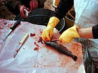

History
Fisheries Today
Questions Answered
Rules and Quotas
Prices and Markets
|
 |

When one thinks of fisheries, an image of the sea and 'Captain Highliner' may come to mind; large ships, nets, tuna, salmon, cod and so on. Well, did you know that commercial fishing has been around in Saskatchewan since 1885? Yes, commercial fishing. Surprised?
|

Not only does this province have a commercial fishing industry in many of the lakes here, but there are many private aquaculture as well as a few privately owned commercial aquaculture operations. One such aquaculture station ranks among the top in the country for production.
In Saskatchewan? In the middle of the prairies??? Yes. Even more interesting is the fact that many of the markets for our 'Saskatchewan fish' are located in the United States and eastern Canada.
|
This important industry employs over 3000 people and there are approximately 200 lakes fished each year. Of the 2.5 million kg total production, the main species commercially fished include whitefish, northern pike, walleye (known here as yellow pickerel), and lake trout. There are other species fished such as suckers (freshwater mullet), sauger, sturgeon, goldeye, carp and tullibee (cisco). The main privately owned commercial aquaculture station located on Lake Diefenbaker currently specializes in raising rainbow trout.
|

How did commercial fishing begin in Saskatchewan (in the land of some of the best agricultural land and forests in Canada)?
Commercial fishing has been around for over 100 years. Most major fisheries have been active since the 1920s. There are about 50 to 60 commercial fisheries mostly in northern Saskatchewan. They are worth around 3 million dollars to Saskatchewan's economy.
The following chronology might give you a better idea of how commercial fishing developed in Saskatchewan.
|
- 1885
Completion of the railway means that it is now possible to transport fish to eastern markets. Commercial fishing as an export industry begins on Qu'Appelle Lakes and Last Mountain Lake; principal species is whitefish.
- 1900
Rail lines and fishing extend as far as Prince Albert. Producers begin using wooden boxes instead of burlap bags to ship fish, therefore causing sawmills to become part of the fishing industry.
- 1920
Major expansion of fisheries now includes Buffalo Narrows area, Dore Lake, Montreal Lake, and Lac La Ronge. Winter fishing produces lake-frozen-fish; hauled by horse and sleigh or cat train out to the nearest railhead; either Big River or Prince Albert. Sawmills at Big River and Dore Lake are established and Big River becomes the 'hub' for the fishing industry. Controversy arises over fishermen on Peter Pond Lakes; farmers from Alberta vs local residents.
- by 1929
Lake Athabasca - fishing is now taking place here; most fishing activity is by non-aboriginal persons from southern Saskatchewan and Alberta. Concern is raised by local residents and leads to residency requirements in many cases.
- 1930
The United States begins restricting imports of whitefish. Filleting/candling/freezing plants are built throughout northern Saskatchewan; in Buffalo Narrows, Dore Lake and Big River. Fishing begins in Pelican Narrows area. Reindeer Lake begins fishing in 1938; filleting plant at Coop Point (Kinoosao). The Depression causes fish prices to drop.
- 1942
The United States enters World War II and guarantees the purchase of all fish produced, therefore causing an increase in Canadian fish production, particularly walleye.
- 1945
The provincial government becomes involved in fish marketing, with the establishment of the Saskatchewan Fish Board(SFB). SFB guarantees the prices for all species and agrees to take all production of fish.
- 1946
World War II ends; airplanes and pilots are available to haul fish from remote lakes. Filleting plants at Wollaston, Pinehouse, Amisk Lake, Pelican Narrows Cree Lake, and La Ronge are established. The provincial review of fisheries (Royal commission) is established.
- 1950
The SFB changes to the 'Fish Marketing Service'; created with the intention of turning sales over to a producers' organization when one becomes available. Co-ops begin to take over management of local fish plants; operating filleting plants and marketing fish, mainly from the eastern side of the province; the west side is serviced by private buyers (Waite Fisheries of Big River and Buffalo Narrows, Clarke Fisheries from Meadow Lake, and McInnes Fish Products of Alberta, (operated on Lake Athabasca). Sport fishing becomes important. The road to Lac La Ronge is constructed.
- 1958
Co-op Fisheries Ltd; a marketing board owned by about 12 fishermen's co-operatives, an umbrella organization to sell production from local co-ops, returned profits to fishermen in the form of dividends. In addition, member fishermen accumulated equity in the assets of the CFL. Co-op Fisheries Ltd operates plants on east side of province, including Pelican Narrows, La Ronge, Wollaston, Kinoosao, Denare Beach (Amisk Lake), Gunnar (Lake Athabasca) and the Pas. The west side of province is handled by private buyers. Production increases and peaks at nearly 7 million kg from 1962-1966.
- 1965
The McIvor Commission (federal) examines freshwater fishery across the country and recommends the establishment of a marketing board (Freshwater Fish Marketing Board) which would operate similarly to the Wheat Board; a central selling agency for commercial fish from the western provinces.
- 1969
Freshwater Fish Marketing Corporation (FFMC) established, patterned after Co-op Fisheries; to market all commercially produced fish from Manitoba, Saskatchewan, Alberta, and the Northwest Territories, and a portion of Northern Ontario. The system of initial and final payments; marketed fish products, paid allowances for activities performed, such as filleting, mincing, freezing, packaging, etc.
- 1974
FFMC constructs a processing plant in Winnipeg. Remote processing operations become uneconomical. Plants close throughout the 1970's, due to processing allowances paid to private operators (set by the FFMC based in costs at the Winnipeg plant). CFl and private processors found that they could not continue to operate on the allowances paid; they continue to operate as fresh fish packing facilities.
- 1978
Co-op fisheries are in receivership: FFMC takes over the management of these plants, Gunnar and Wollaston plants close, but La Ronge plant continues to operate.
- 1986
FFMC plants at Hay River stops processing fish and La Ronge is the last operating FFMC plant outside of Winnipeg.
- 1994
The La Ronge Plant stops processing fish. Product demand and available fish levels seldom reach the one million pound mark required to keep the plant operating viably. The La Ronge Plant is used as a fresh fish packing plant, owned by FFMC, and operated by a private agent.
|
|